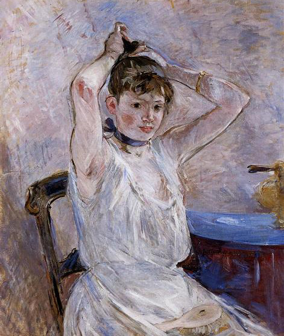
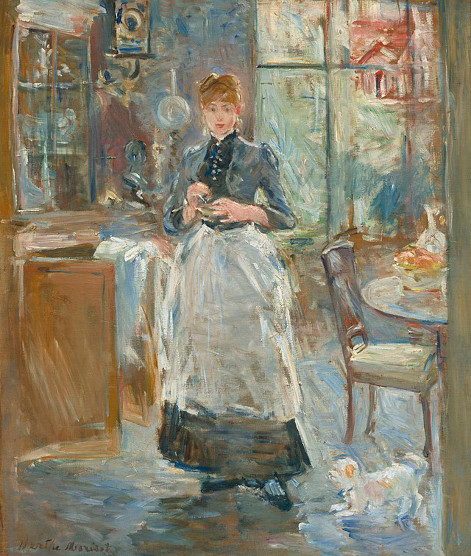
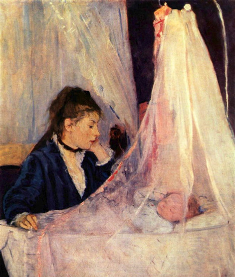
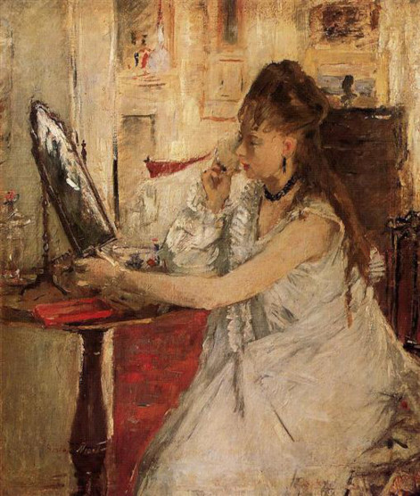

Style and Technique
Impressionism with fleeting shades and shadows
 Morisot's work highly influenced by the types of artwork women were encouraged to produce; small compositions in pencil, gouache, or watercolor paints. Morisot's use of incandescent tones and brush strokes on an unprimed canvas were not the follies of an inexperienced female painter, but rather the techniques that many of the Impressionist painters were using to create their impressive art work. Morisot's love of nature is obvious in her many resplendent paintings.In her later years Morisot continued creating Impressionist paintings that brought a new female perspective to the age old images of women sitting privately at their toilette. Whereas artists such as Manet and Renoir's works sexualized females Morisot perfectly captured the self consciousness of women as they are preparing for an evening out. Berthe Morisot used faint, glistening strokes of paint that were lightly brushed onto the canvas and left a luminescent sheen and she always favored the use of watercolor paints and pastels.
 Berthe Morisot's work is full of light, bright colors and the brush work is disjointed and varied. She accurately represented natural light by applying a large range of colors to the canvas with petite brush strokes. Although up close her paintings become indistinct, from a distance the works are unified with colors that merge together. Harsh lines are removed by a lack of contrasting tones. Berthe Morisot's original style was seemingly unplanned - her models were outside and appear to have been caught going about their daily lives. The artist seemed to capture almost every moment of her daughter's growth in her paintings. Her fluid brush work and the natural light that floods her pictures only adds to the spontaneity of her work.